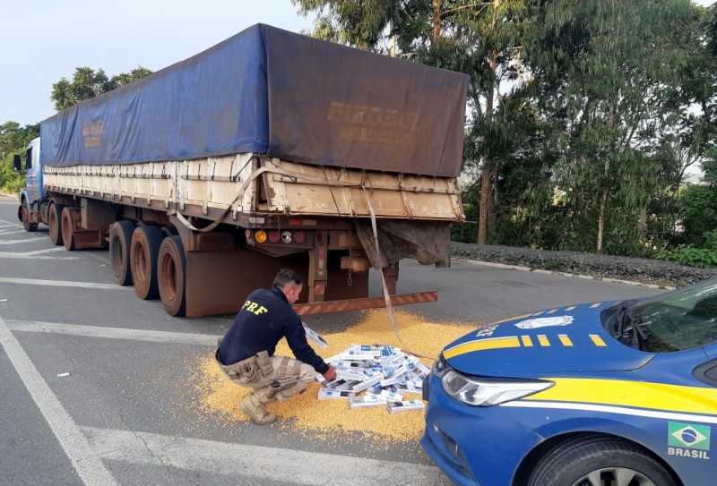
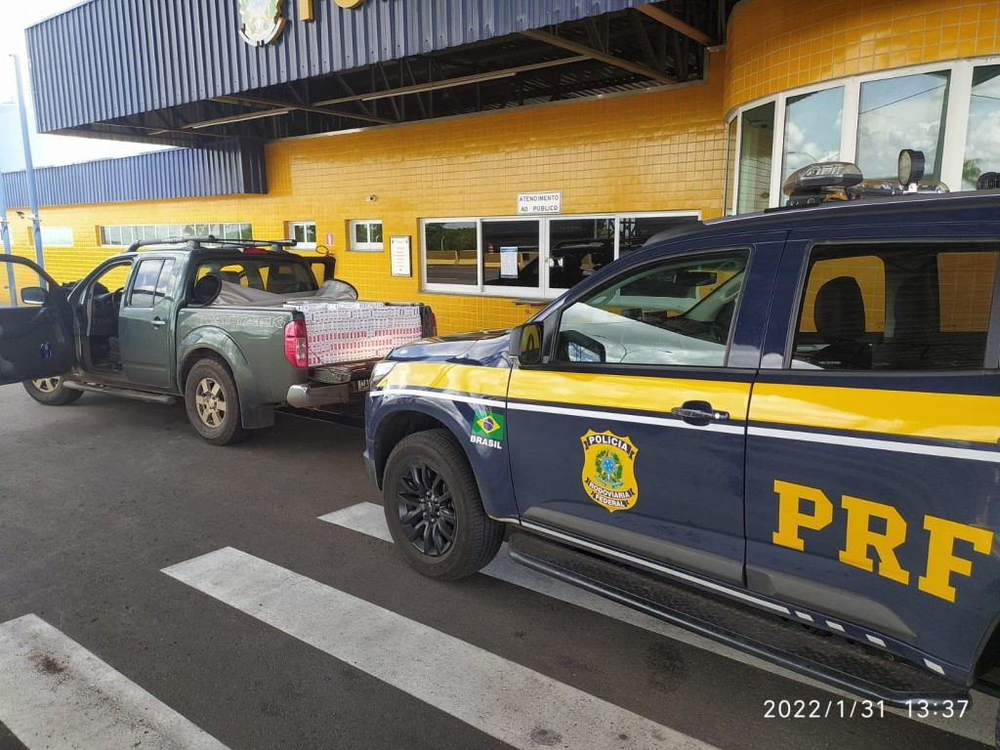
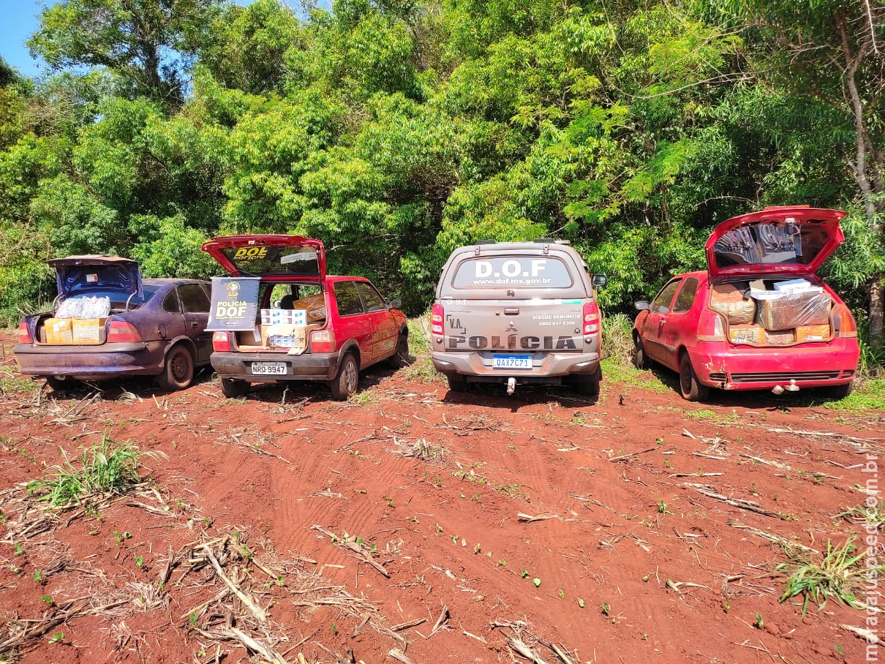
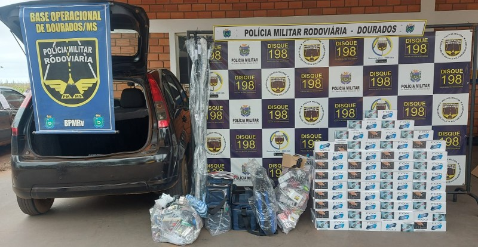

Também chamado de descaminho. Segundo o Código Penal, contrabando significa importar ou exportar mercadoria proibida ou iludir, no todo ou em parte, o pagamento de direito ou imposto devido pela entrada, pela saída ou pelo consumo de mercadoria. Pena: de um a quatro anos de reclusão.

Rodovias federais e estaduais do noroeste do Paraná fazem parte da rota do tráfico e do contrabando que vêm, principalmente, do Paraguai. Segundo a polícia, região concentra grande parte das apreensões de drogas e de produtos trazidos ilegalmente para país. Tal como a cidade de Dourados e pontã pora que são referencias para os contrabandistas

A pena para quem cumpre o descaminho ou contrabando é de 3 a 8 anos de reclusão, e multa

Esse tipo de crime tem sido cada vez mais comum, e cada vez avançando mais, oqeu dificulta para os policiais localizarem os produtos, tais como cigarro paraguaios(que são de venda proibida no Brasil)0, drogas, celulares

Os contrabandistas passam em comboios muitas das vezes, para caso a policia pare um deles não perderem o lucro, porém esse crime tem sido tão comum que a PRF(Policia Rodoviária Federal) nâo da conta de localizar todos os contrabandistas e prender todos, mas as fiscalizações tem sido cada vez mais frequente e com mais intensidade
Agradecemos a sua visita!
Creditos a: Camilly Nicole e Kauane Braz